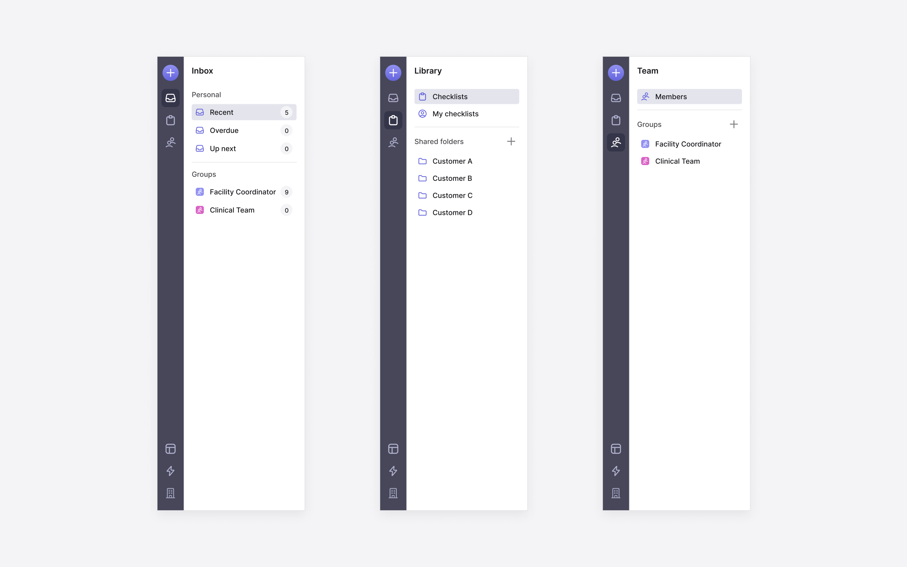
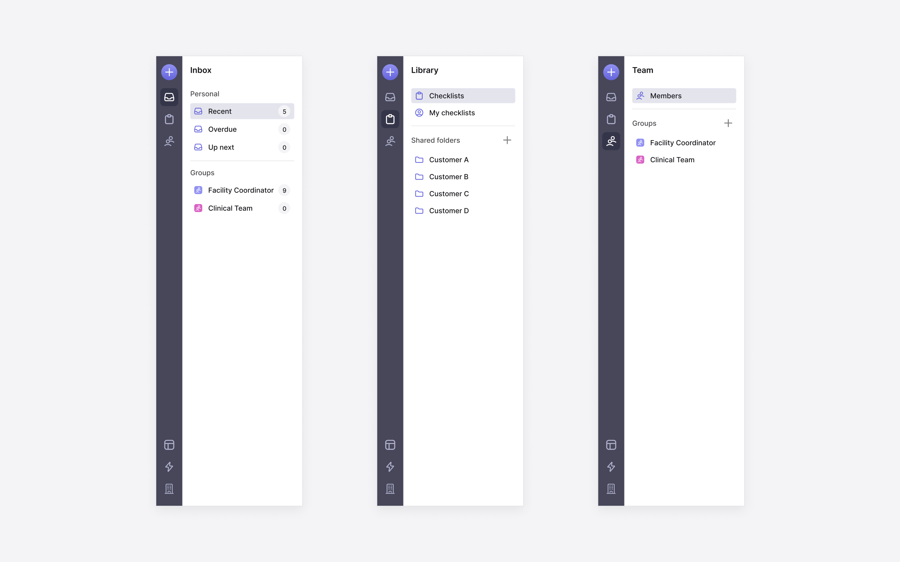

Background
Macro
is a process management tool for teams to design and deploy custom operational processes
without writing code. In April 2020, I joined Macro as employee #1. Our goal was to
build the MVP to release to the public and collect user feedback in order
to find product-market fit. As the first designer at a B2B SaaS startup, I generated
design solutions that are practical, scalable, and intentional.
I worked directly with the co-founders to develop the product from zero to one. Throughout
my time, I conducted user interviews, identified problems, explored countless iterations of
Macro, and collaborated with engineers to turn my designs into a usable app.
Role
Founding Designer
Timeline
Mar 2020 - Jul 2021
Deliverables
Web app
Design System
Landing Page
Logo
Problem
There are tools out there that help you automate workflows (e.g. Zapier), but not all work
can be fully automated. Most work still requires human involvement, yet companies today
don’t have a solution for human-in-the-loop processes. Many teams used static
documents that lived on tools like Google Docs or Notion that didn’t give them
the ability to document, assign, track, and automate common actions in a single context.
With Macro, Operations teams can create, run and track custom workflows in a single context.
Workflows are visualized in a dynamic two-pane checklist UI that provides a simple view of
their work while enabling them to complete tasks that involve people and a suite of third-party apps.

Checklist Runner - A Shared Checklist for Employees to Complete
Visualizing Workflows
The left pane allowed teams to build their workflows in a checklist like they would in the
documentation tools they’re familiar with. These tasks consist of a variety of task types
(e.g. completing forms, uploading files, sending a templated email) that users configure on
the right pane to combine commonly used apps and human tasks into a single place.
The main challenge that I continued to face was keeping the checklist clean and simple while
adding features that enabled collaboration and customizations. We didn’t want the UI
to be overwhelming and feel heavy for teams to get started.

Checklist Editor - Where Teams Build Their Workflows
In response, I established a rule to keep checklist-level information on the left pane and
task-level information on the right pane. The tabs on the right pane gave people space for
further configurations, but I didn’t want to hide automations under a tab since they were
an integral part of Macro. This led me to surface automation below each task to indicate
what happens after completing a particular task, while showcasing the power of Macro.
At the task-level, regular tasks had to be visually and functionally distinguished from
third-party integrations. This was for usability reasons but also considering the
scalability of the UI. Macro integrated with a suite of third-party apps to support
various use cases, so it was important for the UI to be flexible.

Checklist Preview - A Comprehensive View of Their Workflow
Tracking Processes
With Macro being a process management tool, it was obvious that teams needed a way to
keep track of their processes. The challenge here was deciding where this view belongs
and the best way to help teams track progress at a glance.
I explored a version where people can track all of their checklists in a single view,
but this quickly became overloaded since teams would have numerous runs (a deployed
checklist) for the same checklist. I ultimately chose to make the view accessible from
the Checklist Preview so teams can track all the runs by checklist, which was separated
by tabs in order of relevancy. Another iteration took shape in a collapsible accordion
instead of tabs but this hid the other categories beneath the scroll which made it
difficult to access the information when needed.

Track Processes
Within each run, there were a set of tasks that needed to be tracked. After talking to our users, I learned that knowing which specific task a team member is on isn’t as important as the actual progress and the directly responsible individual. Thus I included a progress bar for each run, along with the most helpful information in each column for teams to manage their work.
Assigning Work
The Inbox was one of the biggest design challenges for Macro. Macro supported two types
of task assignments: a single task and a checklist run. The underlying tension was
the difference in user experience for a manager vs. a member. A member could be assigned
a set of tasks inside a checklist, but a manager or a team lead might be responsible
for completing the entire checklist.
With these factors, it was important to clearly distinguish a checklist from a task
while allowing users to easily view the work they're responsible for.
The Inbox is a place where members come to see what they need to worry about, so
it had to be designed in a way that required minimum thinking for members to make
sense of their work.

All Your Tasks in a Single View
The solution here was ultimately to bundle all the tasks inside its respected checklist run and only show members the tasks they are responsible for. If they wish to get a holistic view of the checklist run, they can always click into the checklist. We created a section at the top of the Inbox to show ad-hoc tasks that are not part of a checklist. For these independent tasks, users can view and complete them without having to leave their Inbox.
Design System
As product concepts began to take shape, it was vital for Macro to implement a
design system
that helped the team design and build features quickly. This was for my own process as
the sole designer, but also to help engineers ship features efficiently while
refining the product over time.
I was committed to designing the product in a scalable and flexible way. This meant creating
reusable components to reduce engineering cost when building new screens. As the one
designing this system, I considered these two points while foreseeing how the product
will evolve over time.


 
